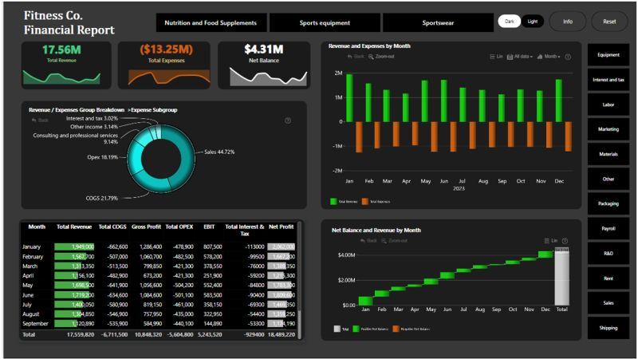

Power BI projects
View App

Olympic games 2024 - others
Data visualization of the 2024 Paris Olympic Games. The analysis presents results and statistics across various sports disciplines. An interactive dashboard helps explore the data in depth.
View App

CRM Maven - maven
Comprehensive analysis of customer relationship management data. The dashboard showcases customer data, sales channels, and conversions. Built for the Maven Analytics platform.
View App

18. Lego - maven
Visualization of LEGO products and sets data. The analysis covers set prices, piece counts, and categories. Created as part of a Maven Analytics challenge.
View App

The best Halloween Candy - maven
Ranking analysis of the most popular Halloween candies. The project examines candy characteristics and consumer preferences. Dashboard built for the Maven Analytics platform.
View App

IT support
Performance analysis of IT support services. The report presents incoming tickets, response times, and resolution rates. Interactive Power BI dashboard.

View App

HTML Card with DAX
Interactive Power BI card built with HTML and DAX. Displays dynamic sales metrics including total sales, growth percentage, and min/avg/max values with a custom bar chart.
View Image

Internal Email Analysis
Analysis of internal company email communication patterns. The dashboard visualizes email volumes, response times, and communication trends. Built with Power BI.
View Image

IT Helpdesk
Performance analysis of IT helpdesk operations. The dashboard presents ticket volumes, resolution times, and support trends. Built with Power BI.
View Image

Cats Vs Dogs
Comparative analysis of cat and dog ownership data. The dashboard visualizes pet preferences and ownership trends. Built with Power BI.
View Image

Coffee Sales Analysis
Analysis of coffee sales data including product types, regions, and revenue trends. Interactive Power BI dashboard.
View Image

Delayed Flights
Analysis of flight delay data across airlines and airports. The dashboard visualizes delay causes, frequencies, and trends. Built with Power BI.
ZoomCharts Projects
View App

Christmas Sales - zoomcharts - fp20
Analysis of Christmas sales data with interactive visualizations. ZoomCharts enables detailed drill-down exploration of sales trends. Built as part of the FP20 Analytics challenge.
View App

North America Sales - fp20 - zoomcharts
Detailed analysis of North American sales data. ZoomCharts visualizations interactively display regional differences. Built for the FP20 Analytics competition.
View App

Udemy - education - zoomcharts
Analysis of Udemy online learning platform course data. The dashboard examines course popularity, pricing, and categories. Interactive report built with ZoomCharts visualizations.
View App

IT Support Analysis - zoomcharts - fp20
Data analysis of IT support tickets and incidents. The project visualizes resolution times, priorities, and categories. Interactive dashboard powered by ZoomCharts.
View App

Top 1000 youtuber - ZoomCharts - onyx
Analysis of the world's top 1000 YouTube channels. The dashboard presents subscriber counts, views, and content categories. Built with ZoomCharts and Onyx visual elements.
View App

Xmas Gift Analysis - fp20 - zoomcharts
Analysis of Christmas gift-giving habits and trends. The visualization presents spending patterns and preferences. Interactive report created for the FP20 Analytics challenge.
View App

Saas Financial Analysis - zoomcharts - fp20
Comprehensive financial analysis of SaaS companies. The dashboard visualizes revenue, growth rates, and subscription metrics. Built with ZoomCharts interactive diagrams for FP20.
View Image

Coffee Sales - zoomcharts
Analysis of coffee sales data with interactive ZoomCharts visualizations. The dashboard explores sales trends, product categories, and regional performance.
View Image

HR Analysis - zoomcharts
Human resources data analysis with ZoomCharts interactive visuals. The dashboard presents workforce metrics, headcount, and HR performance indicators.
View Image

HR Analysis 2 - zoomcharts
Second page of the HR analysis dashboard with additional workforce metrics and ZoomCharts interactive visuals.
View Image

Data Driven Education Management - zoomcharts
Analysis of education management data with ZoomCharts interactive visuals. The dashboard presents student performance, enrollment, and institutional metrics.
View Image

Finance - zoomcharts
Financial data analysis with ZoomCharts interactive visuals. The dashboard explores key financial metrics and performance indicators.
View Image

Ebay Used Car Data - zoomcharts
Analysis of used car listings from eBay with ZoomCharts interactive visuals. The dashboard explores pricing, brands, and market trends.


.png)